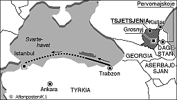

[Temaside] [Faktaservice nr. 6]
Faktaservice nr. 6 95/96, JANUAR 1996
FRIHET ELLER DØD:Tsjetsjenias blodige historie

De siste dagers blodige gisseldrama er ikke første akt i Tsjetsjenias selvstendighetskamp. Grønne daler og ville fjell danner rammen om konflikter, blodhevn og deportasjoner. Tsjetsjenia, ved nordfoten av Kaukasus-fjellene, har alltid vært et urolig område. Nord-Kaukasus har ligget "midt i motorveien", og de mange folkeslagene som bor i området, har derfor måttet lide den vanskjebne det er å bli overkjørt gang på gang opp gjennom historien. Iranere og tyrkere, mongoler og russere har kjempet om kontrollen gjennom århundrer. Hver gang er småfolkene blitt ofre. Hvis de da ikke har slåss seg imellom, for inter-etniske konflikter har heller ikke vært noen sjeldenhet.
Dagens konflikt i Tsjetsjenia må sees mot denne bakgrunnen. Noen politiske analytikere mener at konflikten er av ren økonomisk karakter. Det er spørsmål om hvem som skal ha kontrollen over viktige transportruter for olje fra rike felter i Det kaspiske hav og Kasakhstan. Den ene av disse ledningene går tvers gjennom Tsjetsjenia og til Novorossijsk ved Svartehavet, den andre planlagte ledningen går bare noen mil nord for tsjetsjensk territorium.
Moskva kunne ikke leve med en opprørsrepublikk i dette området. Denne teorien har utvilsomt mye for seg, men kan ikke forklare bitterheten og intensiteten i konflikten fullt ut.
Historiske røtter
Historien gir en dypere forståelse. Tsjetsjenerne har trolig bodd i Kaukasus i et par tusen år. Fjellfolkene, de ulike stammene som holdt til i forskjellige dalfører, levde sitt eget tradisjonelle liv, selv om erobrere kom og gikk. De kjempet også seg imellom, og blodhevn var en fast foreteelse helt til vårt århundre. Stammen nakhtsjo ble på begynnelsen av 1700-tallet identifisert som en egen etnisk gruppe, og tok navnet tsjetsjenere etter landsbyen Tsjetsjen.Omtrent samtidig festet Russland sitt grep på området. Det russiske imperium hadde begynt å ete seg sørover fra kjernelandet rundt Moskva og St. Petersburg. Fortroppen var kosakkene, frie bønder av ukrainsk og russisk opprinnelse som allerede på 1500-tallet hadde begynt å rømme unna livegenskapet. Noen av disse slo seg ned langs elven Terek, som renner nord for Grosnyj, hovedstaden i Tsjetsjenia.
Etterhvert ble kosakkene grensevakt for Russland, ikke minst etter at Peter den store besøkte Tsjetsjenia i 1722 under felttoget mot Persia.
Erobring
Fra da av begynte den langvarige konflikten mellom Russland og Tsjetsjenia. Den pågikk på sitt mest intense under Den kaukasiske krig (1817 - 1864) da Russland gjennomførte sin erobring av Kaukasus, og også la under seg andre folkeslag enn tsjetsjenerne. Men de møtte ekstra sterk motstand fra tsjetsjenerne, som var blitt muslimer og ble anført av sterke imamer som Gazi-Magomed, Gamzam-bek og Sjamil. Sjamil måtte etter 30 års kamp gi opp i 1859, men ble høyt respektert av russerne og til og med adlet.Mot Tyskland
Håpet om selvstendighet ble igjen vekket under revolusjonen i 1917. Håpet ble brutalt knust, sovjetmakten etablerte seg i noen av de bitreste kampene som foregikk under borgerkrigen i kjølvannet av revolusjonen.Moskva opprettet såkalt autonome områder i Nord-Kaukasus, blant dem Tsjetsjeno-Ingusjetia. De ble formalisert i grunnloven av 1936 ("Stalin-grunnloven").
Selvstendigheten skulle ikke vare lenge. Etter Hitler-Tysklands angrep på Sovjetunionen i 1941, trengte tyske tropper sørover i retning oljefeltene ved Baku i Aserbajdsjan. De ble stanset utenfor Grosnyj i desember 1942. Men selv om kaukasierne, blant dem tsjetsjenerne, kjempet mot tyskerne, anklaget Stalin hele folk for å være forrædere. I 1944 ble republikken oppløst, og tsjetsjenerne og ingusjene ble deportert til Kasakhstan under grufulle forhold.
Deportert
Kvinner, barn og menn ble stuet inn i kuvogner og sendt østover. Rundt 800 000 mennesker ble flyttet, av dem døde minst 240 000. Mange av dagens kjente tsjetsjenere, blant dem Ruslan Khasbulatov og Dsjokhar Dudajev, vokste opp i eksil under ekstremt vanskelige forhold.Nikita Khrustsjov rehabiliterte folkene i 1956, i 1957 ble republikkene gjenopprettet og de fleste fikk vende tilbake. Men sårene etter dette overgrepet er langt fra grodd, og ble revet opp igjen da Sovjetunionen brøt sammen i 1991. 2. november 1991 erklærte Tsjetsjenia selvstendighet fra Russland, Dudajev ble valgt til president.
Etter diverse resultatløse drøftelser, tilspisset situasjonen seg igjen fra sommeren 1994, Moskva støttet en gruppe som sto mot Dudajev, og til slutt kom invasjonen 11. desember 1994. Siden har krigen pågått, mer eller mindre intensivt.
Kilde: Kjell Dragnes, Aftenposten
[Innhold] [Info] [Aftenposten hjemmeside] [Til Fakta hovedside]